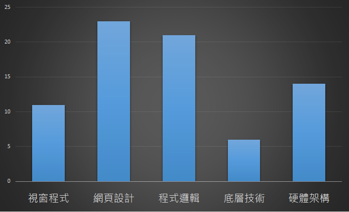

臺師大資訊研究社
104學年度上學期 迎新茶會
社團宗旨 現實版
想聚集對資訊有興趣的人，互相交流學習，一同進步，希望能讓大家在這找到志同道合的朋友。
就是想要在揪團時找得到人啦!!!!!
幹部介紹
社長
陳哲雋(阿哲)
資工105
興趣:桌遊&資訊
擅長:C++、HTML、JS、PHP
喜歡玩資訊，喜歡接觸資訊的各種領域事物，認識新事物就會摸一下，所以知道很多，但不一定都懂XD

活動/公關
范耿誌(wildsky)
資工106
興趣：弄專案、炫炮的特效、
不讀不回討厭：開會
擅長：JavaScript
(我只會 Js... QAQ)
要跑 MozTW 的找我，要練前端的找我，要搞專案的找我。
教學股長
阮韞澂
ㄖㄨㄢˇ ㄩㄣˋ ㄔㄥˊ
資工105
成份：
- 睡眠 30%
- 額外的睡眠 10%
- 備用的睡眠 10%
- 玩 20%
- 吃 10%
- 工作 20%
專長：
C#,PHP,ASP,ASP.NET,HTML5+CSS3+JavaScript,SQL
System Analysis,Database Design
興趣：玩
職業：C#傳教士
C# is love,
C# is life.
社課介紹
感興趣的主題
得獎的是......
網頁設計!!
網頁的組成
- HTML
- CSS
- JavaScript
課程安排
- 週一 JavaScript
- 週三 HTML5+CSS3
- 週四 進階課程
進階課程
Git,PL,Coding Style,RWD,jQuery,.NET MVC5
課程安排
每週一、三、四
19:00~21:00
考試前一週與當週停課
Lightning Show
5~10分鐘
安排於每次社課尾聲
登記截止於當天18:45
學期活動
談錢傷感情
但沒錢免談感情
社費:200元
活動 & 講座優惠